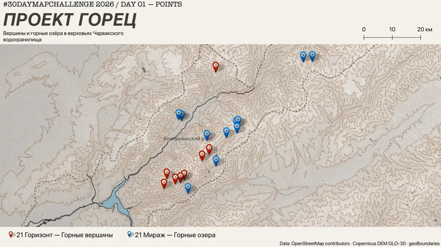
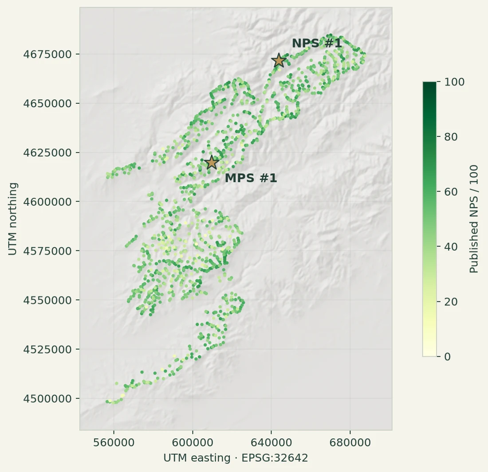
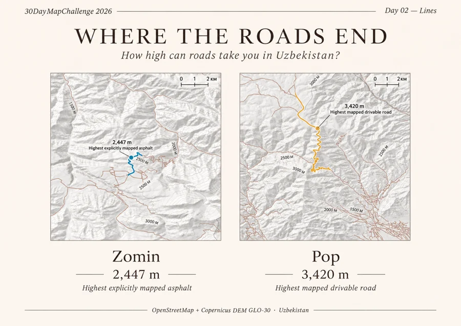
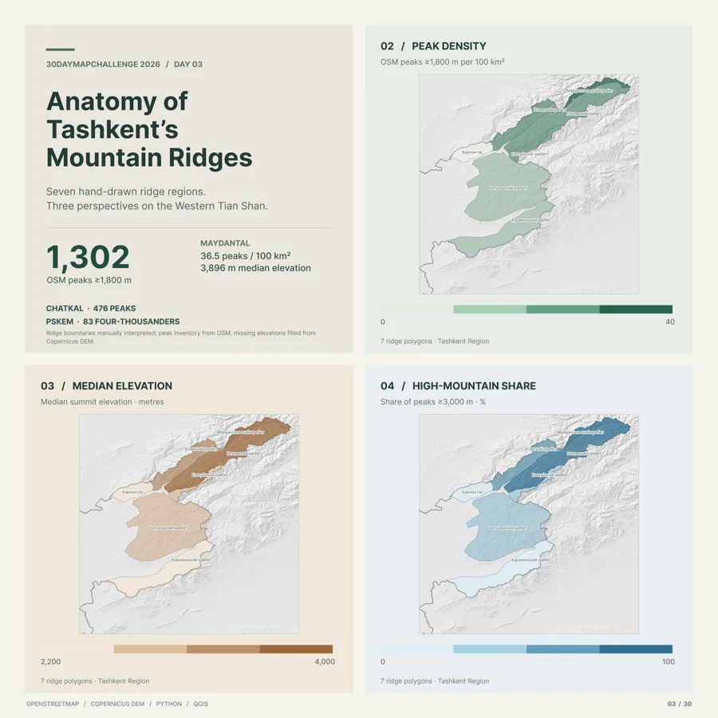
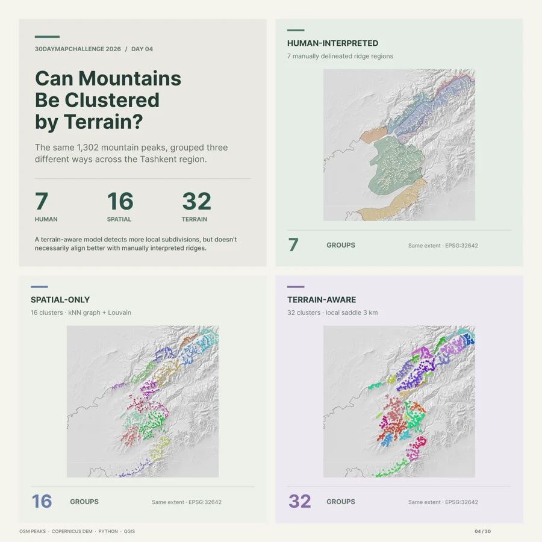
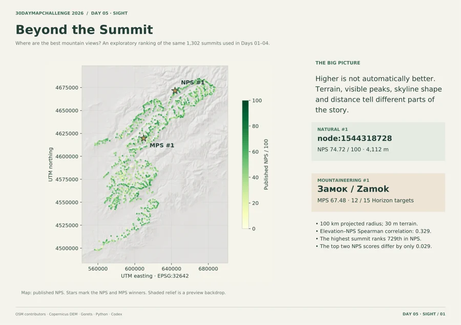
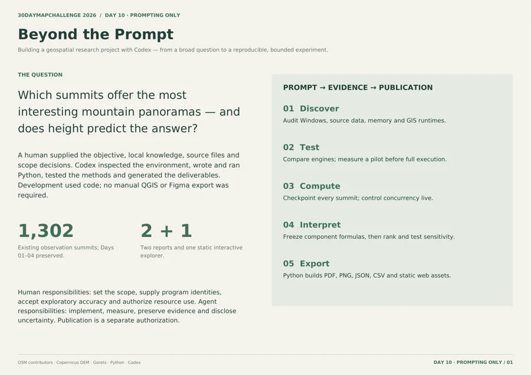

01DAY 01 — Points
Проект «Горец»
Точки, с которых начинается знакомство с горами: программы «21 Горизонт» и «21 Мираж» на фоне рельефа Западного Тянь-Шаня.
НОЯБРЬ 2026 · УЗБЕКИСТАН И ЗАПАДНЫЙ ТЯНЬ-ШАНЬ
От горных озёр до линий горизонта. Коллекция карт о рельефе, дорогах и том, как мы читаем пространство.

ПОЛЕВЫЕ ЗАМЕТКИ В ФОРМЕ КАРТ

01DAY 01 — Points
Точки, с которых начинается знакомство с горами: программы «21 Горизонт» и «21 Мираж» на фоне рельефа Западного Тянь-Шаня.

02DAY 02 — Lines
Асфальт, обычные дороги и треки: сравнение высоты дорожной сети по данным OpenStreetMap и Copernicus DEM.

03DAY 03 — Polygons
Полигоны превращают отдельные вершины в географическую историю: плотность, медианная высота и доля высокогорья.

04DAY 04 — Clusters
Сравнение ручных районов, пространственных сообществ и групп с учётом локального рельефа.

05DAY 05 — Sight
Интерактивный атлас 1 302 вершин: видимость рельефа, линия горизонта и собственные веса рейтинга.

10DAY 10 — Prompting Only
От первого запроса до проверяемого результата: среда Windows, пилоты, ошибки, решения и воспроизводимый конвейер.
ЗА КАЖДОЙ КАРТОЙ — ВОПРОС
Здесь собраны работы 30DayMapChallenge 2026: исходные постеры, понятные пояснения к методам и интерактивные карты. Темы связаны общим ландшафтом, но каждая работа смотрит на него по-своему.
Дни 01–04 сохранены в исходном виде. Новые страницы объясняют их данные и ограничения. Days 05 и 10 объединены проектом Beyond the Summit: от анализа горных панорам до отчёта о разработке с Codex.
Код, источники и воспроизводимость на GitHub ↗